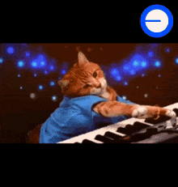
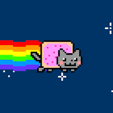

Vou compartilhar algumas curiosidades sobre memes verão 6.7
Meu primeiro post
Por: Cauan
Boas vindas programador! aqui vou te ensinar algumas curiosidades sobre o mundo dos memes.
O Primeiro Meme da História
Por: Cauan
Você sabia que a palavra "meme" surgiu em 1976? Um cientista inventou esse termo para explicar como as piadas e ideias se espalham de pessoa para pessoa!

Por que rimos de memes?
Por: Cauan
Os memes funcionam como piadas internas, só que com o mundo inteiro! Nós compartilhamos porque eles nos fazem sentir parte de um grupo que entende a mesma graça.
Doge: O Meme de 20 Milhões!
Por: Cauan
A famosa foto da cadelinha Kabosu, da raça Shiba Inu, foi vendida em um leilão digital por impressionantes US$ 4 milhões (cerca de R$ 20 milhões)! Esse valor transformou a imagem no meme original mais caro da internet.
O Sorriso que Valeu Meio Milhão
Por: Cauan
Aquela clássica foto da menininha sorrindo de forma maliciosa em frente a uma casa pegando fogo rendeu muito dinheiro. Anos depois, a jovem da foto vendeu o arquivo digital original por nada menos que US$ 500 mil!
❤️ 67🔥 56

Nyan Cat: O GIF de Ouro
Por: Cauan
Um dos GIFs mais nostálgicos da internet — o gatinho pixelado que voa pelo espaço deixando um rastro de arco-íris — completou aniversário em grande estilo. O criador vendeu a animação oficial por cerca de US$ 590 mil.

.jpeg)